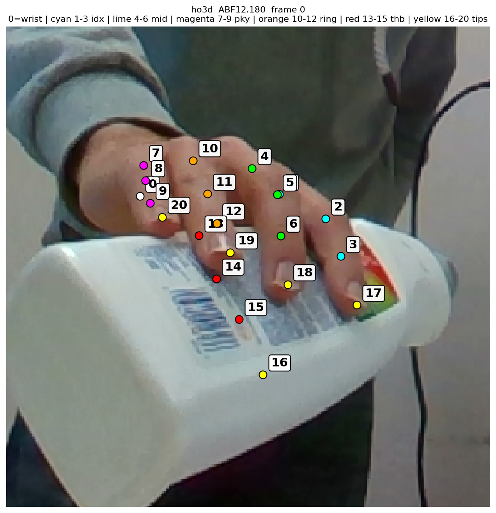
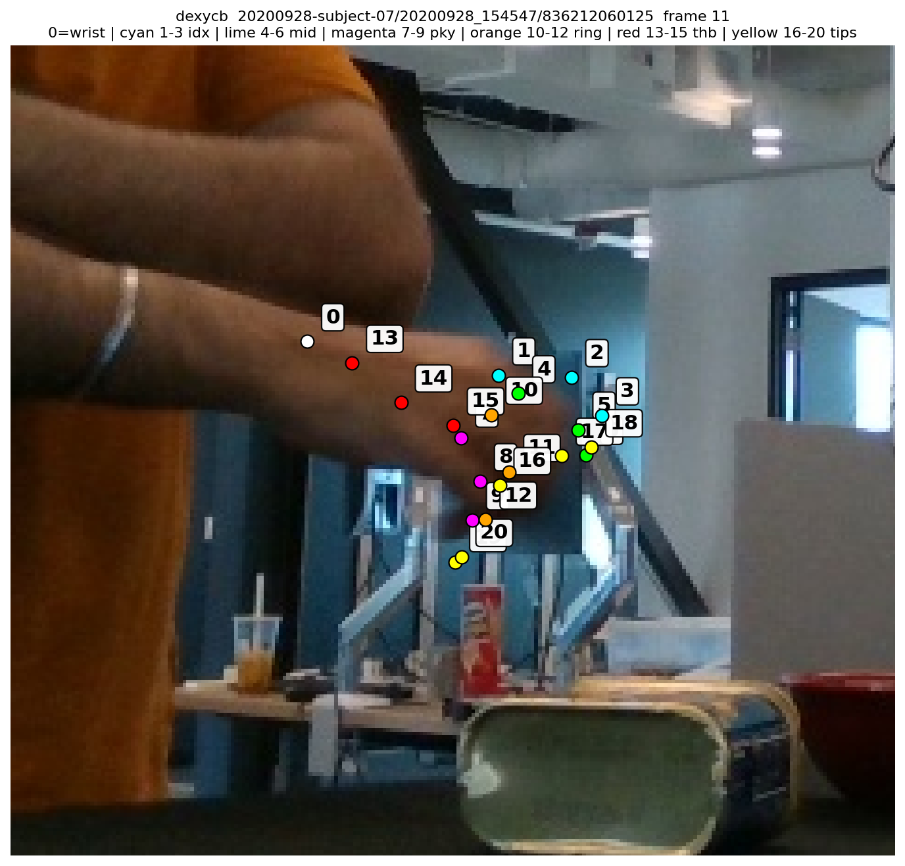

Bug fix: DexYCB pose_y schema FIX
Observed: ValueError: could not broadcast input array from shape (3,3,3) into shape (3,3) at benchmark/data/dexycb_loader.py:428.
Root cause: The loader assumed per-frame pose_y is (N_objects, 7) = quaternion (xyzw) + translation, then called _quat_xyzw_to_rotmat on a slice that was actually shape (3, 4). scipy treated that as a batch of 3 quaternions and returned a (3,3,3) array.
Reality: The DexYCB v1.0 labels NPZ on disk has pose_y: (N_objects, 3, 4) float32 — a per-object 3×4 transform [R | t] in meters. Verified by directly loading labels_000000.npz.
Patch: 5-line change extracting R = Rt[:, :3] and trans = Rt[:, 3] directly; module docstring corrected too. _quat_xyzw_to_rotmat left in place (no other call sites, harmless). All 209 pre-existing tests continue to pass.
- if pose_y.ndim == 1:
- pose_y = pose_y.reshape(-1, 7)
+ if pose_y.ndim == 2:
+ pose_y = pose_y.reshape(-1, 3, 4)
if ycb_grasp_ind < pose_y.shape[0]:
- obj_p = pose_y[ycb_grasp_ind]
- if not np.allclose(obj_p, 0.0):
- quat_xyzw = obj_p[:4]
- trans = obj_p[4:] # meters
- R = _quat_xyzw_to_rotmat(quat_xyzw)
+ Rt = pose_y[ycb_grasp_ind] # (3, 4) [R | t] in meters
+ if not np.allclose(Rt, 0.0):
+ R = Rt[:, :3].astype(np.float32)
+ trans = Rt[:, 3].astype(np.float32)
The joint-order rabbit hole FINDING
Three consecutive wrong skeletons, each from a different mistaken assumption. Saved to memory (reference_mano_joint_order.md).
| Attempt | Assumption | Symptom | Verdict |
|---|
| v1 | OpenPose-style parents [0, 0,1,2,3, 0,5,6,7, 0,9,10,11, 0,13,14,15, 0,17,18,19] on raw smplx output | Bones jumped between fingers. OpenPose and MANO disagree on finger-index assignment. | WRONG |
| v2 | MANO parents with tips assigned in joint-order (tip 16 = idx tip, 17 = mid tip, ...) | Fingers looked right but each tip connected to the next finger's distal — systematic off-by-one on tips. | WRONG |
| v3 | MANO→OpenPose remap but with the same wrong tip order embedded | Same off-by-one now visible in OpenPose space — tip of thumb attached to pinky distal, etc. | WRONG |
| v4 | Tips are in vertex-index order (thumb, index, middle, ring, pinky) because MANO_FINGERTIP_VERT_INDICES = [744, 320, 443, 554, 671] is sorted by vertex number, not finger. | HO3D overlay matches anatomy; DexYCB still flagged wrong by user. | HO3D OK · DexYCB WRONG |
Empirical truth (HO3D frame 0, ABF12.180):
| Tip | Nearest distal | Distance |
|---|
| 16 | thumb (15) | 38.1 mm |
| 17 | index (3) | 28.2 mm |
| 18 | middle (6) | 28.7 mm |
| 19 | ring (12) | 29.0 mm |
| 20 | pinky (9) | 22.7 mm |
Correct arrays:
# raw MANO 21-joint order: wrist | idx(1-3) | mid(4-6) | pky(7-9) | rng(10-12) | thb(13-15) | tips: thb(16), idx(17), mid(18), rng(19), pky(20)
MANO_PARENTS = [0, 0, 1, 2, 0, 4, 5, 0, 7, 8, 0, 10, 11, 0, 13, 14, 15, 3, 6, 12, 9]
MANO_TO_OPENPOSE = [0, 13, 14, 15, 16, 1, 2, 3, 17, 4, 5, 6, 18, 10, 11, 12, 19, 7, 8, 9, 20]
OPENPOSE_PARENTS = [0, 0, 1, 2, 3, 0, 5, 6, 7, 0, 9, 10, 11, 0, 13, 14, 15, 0, 17, 18, 19]
Outstanding: DexYCB still shows a wrong skeleton. Both loaders use identical
_mano_forward patterns, identical
MANO_FINGERTIP_VERT_INDICES, identical smplx
is_rhand wiring, so the raw joint order should be identical. Labeled debug frames published at
ho3d_labeled.png and
dexycb_labeled.png; awaiting user observation of which numbered dot sits on which anatomical finger.
Labeled debug frames

HO3D — user-confirmed correct

DexYCB — user says skeleton is wrong

{kind=link}
{kind=link}